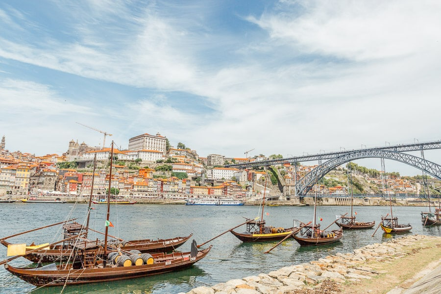

A Pena-palota egy mesés kastély Sintra városában, Portugáliában.
A 19. századi romantikus stílusban épült, és az egyik legismertebb látnivalója a régió számos lenyűgöző palotájának és kastélyának.
A Pena-palota eredetileg a mai neoromantikus stílus egyik korai példája volt,
amely számos stílus és elem keverékét tartalmazza, beleértve a neogótikát, a neomaureszkot és a neoreneszánsz elemeket is.
Belém Torony, Lisszabon
A Belém-torony (Torre de Belém) egy különleges tengerparti erődítmény Lisszabonban, Portugáliában.
A 16. század elején épült, és a Tejo-folyó torkolatánál, a Belém negyedben található.
A torony eredetileg védelmi célt szolgált, és része volt a lisszaboni védelmi rendszernek a tengeri hozzáféréstől való védelem érdekében.
Jerónimos Monostor, Lisszabon
A Jerónimos Monostor (Portugálul: Mosteiro dos Jerónimos) Lisszabon egyik legjelentősebb és leglátványosabb történelmi épülete.
A Manuelin stílusban épült monostor a 16. században kezdődött és közel egy évszázadig tartó építkezéssel készült el.
A monostor a lisszaboni Belém negyedben található, a Tejo-folyó partján.
Hajókázás Portoban
A Douro-folyó Portugáliában és Spanyolországban ered, majd a Pireneusoktól délnyugatra folyik.
Portugáliában a Douro a főbb folyórendszerek egyike, és egyike az Iberiai-félsziget legfontosabb folyóinak.

Algarve Beaches
A Belém-torony (Torre de Belém) egy különleges tengerparti erődítmény Lisszabonban, Portugáliában.
A 16. század elején épült, és a Tejo-folyó torkolatánál, a Belém negyedben található.
A torony eredetileg védelmi célt szolgált, és része volt a lisszaboni védelmi rendszernek a tengeri hozzáféréstől való védelem érdekében.
Ribeira tér, Porto
A Ribeira tér Portó egyik legikonikusabb és legnépszerűbb helyszíne, mely a Douro-folyó partján található.
A tér a város óvárosának szívében fekszik, és a történelmi és kulturális jelentőségű Ribeira negyed részét képezi.
A tér jellemzője az apró, színes házaknak, amelyek a parton sorakoznak, és a közvetlen közelben találhatók.
Foglalás
Most lehetőséged van nálunk is lefoglalni egy idegenvezetős kirándulást az alábbi helyek egyikére!
Csak válaszd ki a számodra legideálisabb úticélt és dátumot, mi intézzük a többit :)